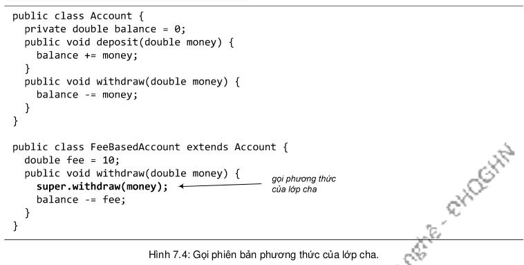

Đôi khi, tại một lớp con, ta cài đè một hành vi của lớp cha, nhưng ta không muốn thay thế hoàn toàn mà chỉ muốn bổ sung một số chi tiết. Chẳng hạn, lớp Account đại diện cho tài khoản ngân hàng chung chung. Nó cung cấp phương thức withdraw(double) với chức năng rút tiền, phương thức này thực hiện quy trình rút tiền cơ bản: trừ số tiền rút khỏi số dư tài khoản (balance). FeeBasedAccount là loại tài khoản ngân hàng thu phí đối với mỗi lần rút tiền, nghĩa là bên cạnh quy trình rút tiền cơ bản, nó còn làm thêm một việc là trừ phí rút tiền khỏi số dư tài khoản. Như vậy, FeeBasedAccount có cần đến nội dung của bản withdraw() được Account cung cấp sẵn, nhưng vẫn phải cài đè vì nội dung đó không đủ dùng. Ta cũng không muốn chép nội dung bản withdraw() của Account vào bản của FeeBasedAccount. Thay vào đó, ta muốn có cách gọi phương thức withdraw() của Account từ trong phiên bản cài đè tại FeeBasedAccount.
Tóm lại, từ trong phiên bản cài đè tại lớp con, ta muốn gọi đến chính phương thức đó của lớp cha, ta phải làm như thế nào? Từ khóa super cho phép gọi đến cách thành viên được thừa kế. Phương thức withdraw() của FeeBasedAccount có thể được cài đặt đại loại như trong Hình 7.4
Một tham chiếu tới đối tượng thuộc lớp con sẽ luôn luôn gọi phiên bản mới nhất – chính là phiên bản của lớp con nếu có. Đó là cách hoạt động của đa hình. Tuy nhiên, từ khóa super cho phép gọi phiên bản cũ hơn – phiên bản mà lớp con được thừa kế.
Từ khóa super của Java thực chất là một tham chiếu tới phần được thừa kế của một đối tượng. Khi mã của lớp con dùng super, chẳng hạn như trong lời gọi phương thức, phiên bản được thừa kế sẽ chạy.